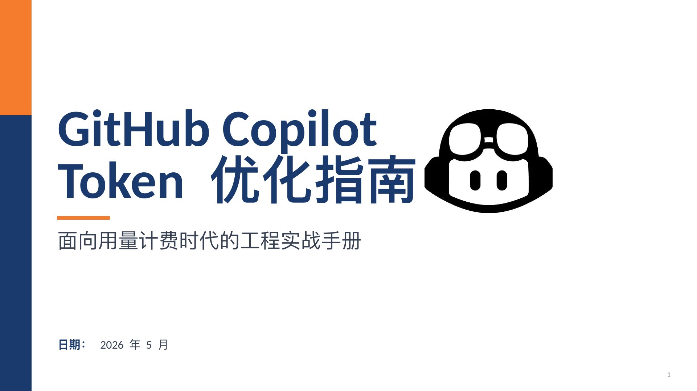

开场 · Slide 01
GitHub Copilot Token 优化指南
面向用量计费时代的工程实战手册
把 UBB 时代的 Copilot 使用从“凭感觉”转向可度量、可优化的工程实践。
- Token 将成为可见成本
- 优化目标不是少用 Copilot，而是提高每个 token 的信息密度
- 后续内容围绕成本来源与 8 个降本杠杆展开
基于目录中的 PPT 生成的网页版本：保留原始幻灯片视觉预览，并将内容重构为适合浏览、分享和复盘的长页分析。

UBB 的本质不是让 Copilot 变贵，而是把提示词、上下文、输出、工具和模型选择这些工程决策变成可度量成本。
真实成本通常来自系统提示词、仓库指令、文件上下文、对话历史和工具 Schema 等隐藏输入。
输出 token 普遍比输入 token 贵，控制回答长度是最高 ROI 杠杆。
模糊需求直接跑 Agent，可能比一次聚焦 Ask 调用贵 5 到 25 倍。
真实案例中，MCP 工具从 188 个降到 52 个，每个 Agent 任务节省约 1.3 万 token。
优先级建议：先处理常驻上下文、MCP 工具和输出控制；这些动作一次配置，长期复利。
去掉客套与零信息词，保留技术细节；优先用结构化和代码原生表达。
Copilot 代码场景优先英文；中文接近英文，但不同模型分词成本差异很大。
把规则拆成常驻、条件加载、按需三层，用 applyTo 控制加载范围。
在系统/仓库指令中加入长度和格式上限，直接压缩最贵的输出 token。
Ask / Plan / Agent 逐级升级，别用模糊需求直接启动 Agent。
大模型规划，小模型执行；复杂任务才切到更高推理强度。
只写 Agent 从代码里猜不到的地雷，删除项目 wiki 式噪声。
按工作区启用工具，定期清理低使用率服务器，减少 Schema 税。
如果时间有限，先做高亮的 1、3、6：压缩常驻指令、清理 MCP、拆分 applyTo 指令文件。
10 分钟压缩 copilot-instructions.md
1 分钟在提示词末尾加输出上限
15 分钟盘点并禁用没用到的 MCP 服务器
默认 Ask，确有必要时再切 Agent
默认 Auto，必要时再切高级模型
15 分钟添加 applyTo 限定范围的指令文件
每月做一次配置回顾
左侧为网页化分析与提炼，右侧为从原 PPT 渲染的对应幻灯片预览；点击图片可查看大图。